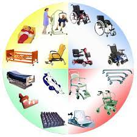
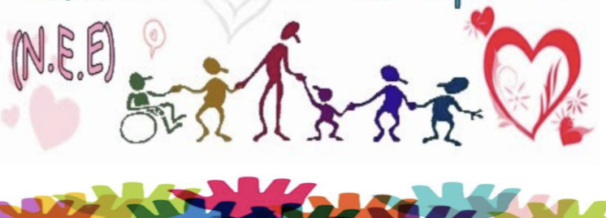
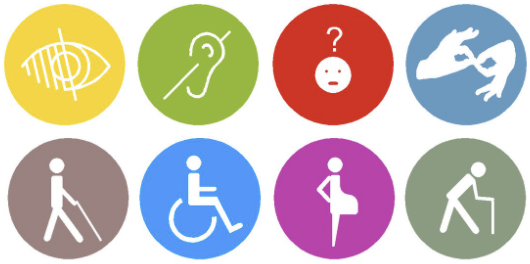

Accesibilidad
Las medidas pertinentes para asegurar el acceso de las personas con discapacidad, en igualdad de condiciones con las demás, al entorno físico, el transporte, la información y las comunicaciones, incluidos los sistemas y las tecnologías de la información y las comunicaciones, y a otros servicios e instalaciones abiertos al público o de uso público, tanto en zonas urbanas como rurales.

Acciones Afirmativas
 Son las medidas especiales, específicas y de carácter temporal, a favor de personas o grupos en situación de discriminación, cuyo objetivo es corregir situaciones patentes de desigualdad en el disfrute o ejercicio de derechos y libertades, aplicables mientras subsistan dichas situaciones. Se adecuarán a la situación que quiera remediarse, deberán ser legítimas y respetar los principios de justicia y proporcionalidad. Estas medidas no serán consideradas discriminatorias en términos del artículo 5 de la presente Ley, Artículo adicionado DOF 20-03-2014.
Son las medidas especiales, específicas y de carácter temporal, a favor de personas o grupos en situación de discriminación, cuyo objetivo es corregir situaciones patentes de desigualdad en el disfrute o ejercicio de derechos y libertades, aplicables mientras subsistan dichas situaciones. Se adecuarán a la situación que quiera remediarse, deberán ser legítimas y respetar los principios de justicia y proporcionalidad. Estas medidas no serán consideradas discriminatorias en términos del artículo 5 de la presente Ley, Artículo adicionado DOF 20-03-2014.
Las acciones afirmativas serán prioritariamente aplicables hacia personas en estado de vulnerabilidad pertenecientes a los pueblos indígenas, afro descendientes, mujeres, niñas, niños y adolescentes, personas con discapacidad y personas adultas mayores. Artículo adicionado DOF 20-03-2014.
Ajustes Razonables
Modificaciones y adaptaciones necesarias, que no impongan una carga desproporcionada o indebida, que permitan a las personas compensar alguna deficiencia que les impida el goce o ejercicio, en igualdad de condiciones con las demás, de todos los derechos humanos y libertades fundamentales.

Ayudas Técnicas
|  | Dispositivos tecnológicos y materiales que permiten habilitar, rehabilitar o compensar una o más limitaciones funcionales, motrices, sensoriales o intelectuales de las personas con discapacidad |
Necesidad Educativa Especial
Las NEE son requerimientos que poseen algunas y algunos estudiantes para lograr ciertos aprendizajes que son considerados esenciales en su inserción a la sociedad. Los aprendizajes esenciales figuran en el currículo formativo requiriendo se incorporen a su proceso educativo mayores recursos y apoyos adicionales a los utilizadas habitualmente, con los compañeros de su edad, por el centro de formación y el cuerpo docente. Una o un estudiante con NEE es aquel a quien le resultan insuficientes los recursos y ayudas que tradicionalmente se utilizan para responder como la mayoría.
La necesidad educativa se convierte en especial cuando excede en mayor o menor medida la planificación educativa que se ha hecho pensando en la mayoría.

Diseño Universal
“si funciona bien para las personas de todo el espectro de la capacidad funcional, funciona mejor para todos”.
Se entenderá el diseño de productos, entornos, programas y servicios que puedan utilizar todas las personas, en la mayor medida posible, sin necesidad de adaptación ni diseño especializado. El diseño universal no excluirá las ayudas técnicas para grupos particulares de personas con discapacidad cuando se necesiten.
Principios del Diseño Universal

- Igualdad de uso
- Flexibilidad
- Simple e intuitivo
- Información fácil de percibir
- Tolerante a errores
- Escaso esfuerzo físico
- Dimensiones apropiadas